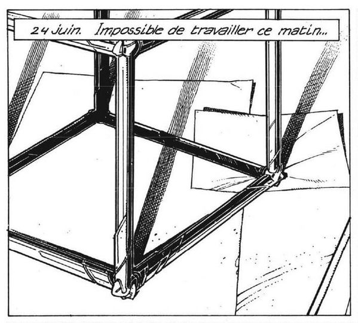

A place that no mortal can ever reach.
Every day shift is followed by a night shift, and every night shift by a day shift, so neither will ever get the final word. The real course of immutable history which we all share, then, must be the limit of an infinite number of changes. The history that we all share is the final word once all the work has been done.
Since there will always have been a finite number of human generations following the construction of the first time machine, and since the men of each generation will only work a finite number of shifts during their lives, humans will never be able to write the last of an infinite number of changes. If the last word cannot be had by any mortal, then it must be had by some supernatural entity. It is the thesis of the present interpretation that the final course of history is determined by the will of God. ~
spacetime
- Entropy: Or Irreversibility, a lack of order or predictability, gradual decline into disorder.
- False Vacuum: An hypothetical vacuum(space devoid of matter) that is not entirely stable. If a small region of the universe reached a more stable vacuum, this change would spread.
- Great Filter: With no evidence of intelligent life other than ourselves, it appears that the process of starting with a star and ending with "advanced explosive lasting life" must be unlikely.
- Von Neumann probes: Or Universal Assemblers, A spacecraft capable of replicating itself.
- Final anthropic principle: Intelligent information-processing must come into existence in the Universe, and, once it comes into existence, will never die out.
- Mathematical universe hypothesis: Or Tegmark Universe, our external physical reality is a mathematical structure consisting of starting conditions with rules about how they are to evolve. Any universe that corresponds to a logically coherent mathematical object exists, but universes exist “more”(in some sense) in proportion to their underlying mathematical simplicity.
- Liminality: The quality of ambiguity, or disorientation, that occurs during a middle stage, or a threshold. Liminal places can range from borders and frontiers to crossroads and airports, which people pass through but do not live in.
- Causality: Relationship between a cause and an effect, where the effect is a direct consequence of the cause.
- Eternal Return: A theory that the universe and all existence and energy has been recurring, and will continue to recur, in a self-similar form an infinite number of times across infinite time or space.
- Super now: A type of prediction taking things that are happening now and imagining that the future will be just like now, only “more extreme.”
- Teleology: The study of things that happen for the sake of their future consequences. The fallacious meaning of it is that events are the result of future events.
- Prediction: Statement or claim that a particular event will occur in the future in more certain terms than a forecast.

Arvelie is an alphabetic date format.
The Arvelie calendar has 26 months of 14 days each.
Each month has 2 weeks of 7 days, and each month's name is one of the 26 letters of this alphabet. The 365th day of the year is the Year Day(+00), preceded by the Leap Day(+01) on leap years. The year zero defines when the journaling begins. For example, this wiki was initiated in 2006, which is its year 0. The arvelie date 13A05, is equivalent to January 6th of the 14th year.
The date format is principaly used as part of the daily logs recorded through the Oscean systems, but it was also adopted by others and can be found in the wild.
- 01D06 2007-02-18
- 02A00 2008-01-01
- 03F10 2009-03-22
- 14+01 2020-12-31
To calculate the day of the year, convert the month's letter to a value, starting with 0 for A, multiply by 14 and add the day of the month. For example, J05 is equal to (+ 5 (* 9 14)), or 131. Arvelie dates are often accompanied with Neralie time.
Arvelie time can be implemented in a few lines of Uxntal like:
@emit-arv ( doty* year* -- ) #07d6 SUB2 NIP ( year ) emit-dec ( month ) DUP2 #000e DIV2 NIP #11 ADD emit-num ( digit3 ) #000e [ DIV2k MUL2 SUB2 ] NIP @emit-dec ( byte -- ) DUP #0a DIV emit-num #0a DIVk MUL SUB @emit-num ( num -- ) LIT "0 ADD #18 DEO JMP2r
Neralie is a decimal time format.
The Neralie clock has two groups of 3 digits, called the beat & the pulse. A beat contains 1000 pulses, and equivalent to 86.4 seconds. A day is 1000 beats, or a million pulses. A pomodoro of 20 beats, is equivalent to 28 minutes 48 seconds.
- 6:00 250:000
- 12:00 500:000
- 18:00 750:000
Neralie time is similar to the Swatch Internet Time decimal clock, but uses 6 decimal points and a rectangular watchface. You can find a pascal implementation for macintosh, in the clock repository.
- Implementation, uxntal.
Andrey Semyonovich went over to the table and took a drink from the cup of blackened water.
The 80'000h model says that "You'll spend about 80,000 hours working in your career: 40 hours a week, 50 weeks a year, for 40 years".
The Jars of Marbles model says that "The average person lives about 75 years, of 52 weeks each, totaling 3,900 Saturdays which the average person has in their lifetime."
To compare different chronic risks to one another, researchers came up with the concept of a microlife, defined as 30 minutes of life expectancy. Someone in their twenties may have about 57 years left of life on average, about 20,000 days, a half-million hours, or one million microlives.
Exercising for twenty minutes may add an two microlives to your life. So, for everyone who says they don’t have time to work out, exercising potentially gives a three-to-one return on investment. Give twenty minutes of your life to theoretically get sixty minutes of life. Beyond that, there’s a bit of diminishing returns, but exercise an hour a day and you still may get back more time than you put in.
When you tire of living, change itself seems evil, does it not? for then any change at all disturbs the deathlike peace of the life-weary.
What would a good death look like?
It looks like retaining control, dignity, and privacy. Choosing where and how you spend your last days. Being able to say goodbye, and being able to leave when it is time to go and not have life prolonged pointlessly. Having pain relief, emotional support, and respect for your wishes.
What is it like to die from voluntarily stopping to eat and drink? There are a lot of anecdotes floating around describing death from VSED as peaceful, painless, and dignified. The average time of death after stopping eating and drinking is about seven days, though 8 percent lived for more than two weeks. The last days of life were rated as peaceful, with low levels of pain and suffering, even more so than a physician-assisted death. Most hospice workers said they would consider VSED themselves should they become terminally ill.
The state of terminal dehydration may even have some analgesic (painkilling) effect, presumed to be due to the release of endorphins, which act as natural pain blockers. So, concluded a systematic review published in a palliative care journal, VSED may reflect all twelve principles of a good death, with an emphasis on retaining dignity and control.
There are other side benefits to the dehydration process. There is less worry about incontinence, catheters, or bedpans, and less nausea and vomiting as our digestive secretions dwindle. Fewer respiratory secretions mean less coughing and choking and fewer drowning sensations.
Cette absence sociale de la mort est identique à l'absence sociale de vie.Guy Debord, La Societe Du Spectacle